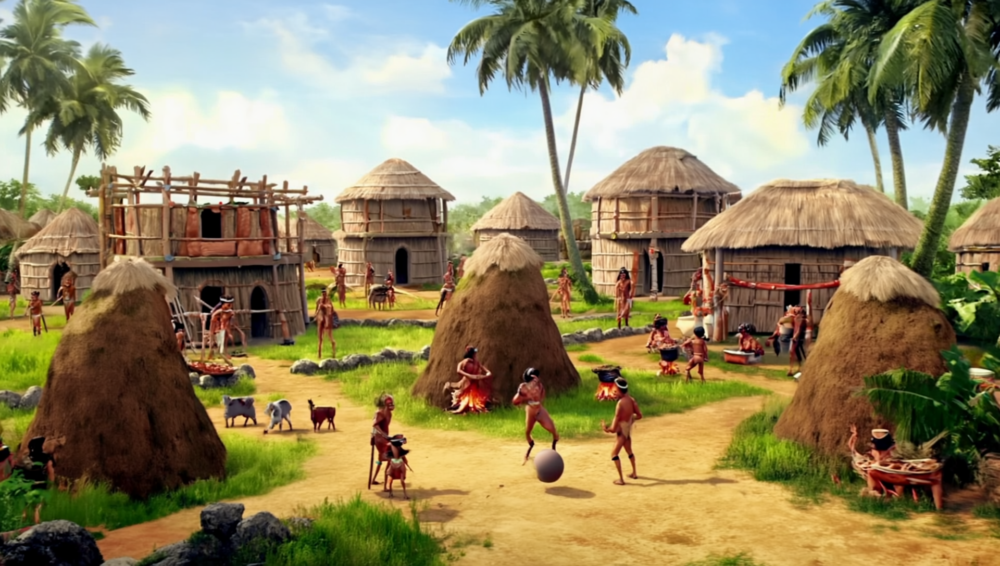
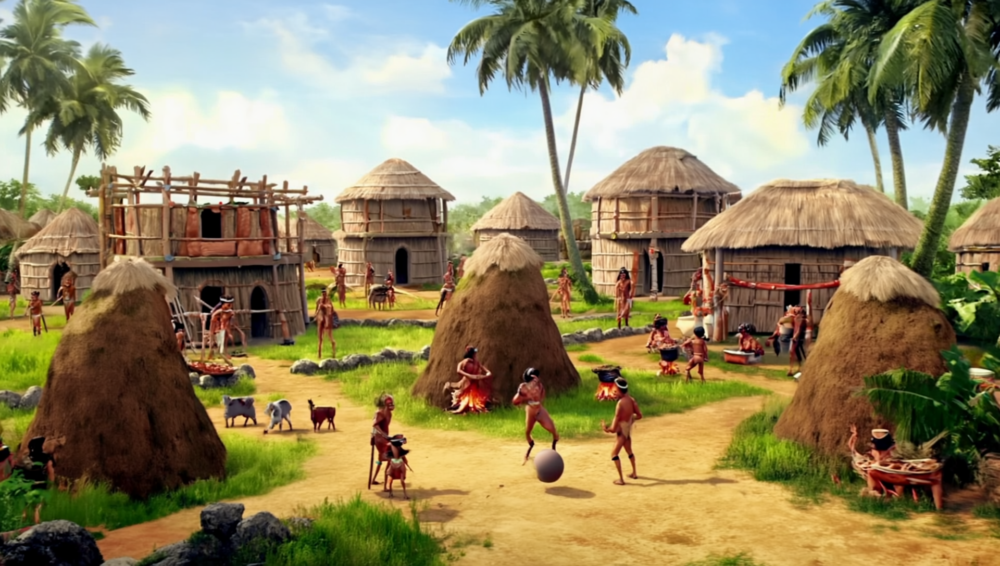

Puerto Rico: Historical Timeline
Where the Past Meets the Future
📜 The Regent's Historical Note
"To understand where we're going, we must remember where we came from. Puerto Rico's resilience through centuries of change prepared it to become Mars' inspiration. The same spirit that rebuilt after hurricanes is the spirit that builds domes on Mars."
- The Regent, from the Martian Observatory
⏳ Puerto Rico's Historical Journey
🏹 Taíno Era (Pre-1493)
The original inhabitants called the island "Borikén" - the land of the brave lord. A culture rich with tradition, agriculture, and connection to the land that would influence all future generations.
 

⚔️ Spanish Colonial Period (1493-1898)
400 years of Spanish rule shaped culture, architecture, and identity. From the fortifications of Old San Juan to the blending of traditions, this era built the foundation of modern Puerto Rico.
🇺🇸 American Period (1898-Present)
The complex relationship that continues to evolve. Through economic changes, cultural exchanges, and natural challenges, Puerto Rico's unique identity strengthened and adapted.
🔮 The Bridge to Tomorrow
Every historical moment in Puerto Rico's timeline contributed to creating the visionary society that would eventually inspire Martian colonization. The same innovative spirit that rebuilt after hurricanes now builds sustainable habitats on Mars.
The Regent observes: "When I look at Old San Juan's forts, I see the same determination in our Martian domes. When I study Taíno agricultural methods, I see the roots of our hydroponic systems. History isn't just about the past - it's the foundation of our future."